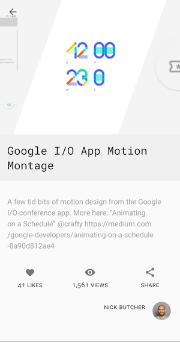

Testing two consecutive LiveData emissions in Coroutines
Learn how to pause and resume a TestCoroutineDispatcher
This article is about how we unit tested two consecutive LiveData emissions by pausing and resuming the CoroutineDispatcher of a Coroutine in the open-source Plaid application.
Don’t forget to check out the Good Practices section at the end of the article to make your tests accurate, fast and reliable.
The problem
We wanted to test two consecutive LiveData emissions (one of those executed in a coroutine) but it wasn’t possible since we used to inject Dispatchers.Unconfined that executed all coroutines immediately. Because of this, by the time we could assert the emissions in the unit test, the first LiveData emission was missed and we could only check the second emission. More details to follow:
On the Dribbble (one of Plaid’s data sources) details screen, we wanted to show the screen as quickly as possible, but some elements could take some time to process before presenting (due to lazily formatting markdown into Spannables). To solve this we decided to rapidly emit a simplified version of the UI state, then kick off a background operation to produce the processed version and then emit it.
 Dribbble Shot details screen in Plaid
For this, we use LiveData and Coroutines: LiveData for UI communication and Coroutines to perform operations off the main thread. When the ViewModel starts, we emit a basic UI model to the LiveData the UI observes. Then, we call the CreateShotUiModel use case that moves execution to the background and creates the complete UI model. When the use case finishes, the ViewModel emits the complete UI model to the same LiveData as before. This can be seen in the code below:
class ShotViewModel(...) {
init {
val result = shotsRepository.getShot(shotId)
if (result is Result.Success) {
// FIRST UI EMISSION with an incomplete UI Model
_shotUiModel.value = result.data.toShotUiModel()
processUiModel(result.data)
} else { /* ... */ }
}
private fun processUiModel(shot: Shot) {
viewModelScope.launch(dispatcherProvider.main) {
// Processing full model in the background
// The createShotUseCase makes this call main-safe
val uiModel = createShotUiModel(shot)
// SECOND UI EMISSION with the full UI Model
_shotUiModel.value = uiModel
}
}
}
We want to test that both UI states were emitted to the UI. However, we couldn’t verify the first emission because the two UI states were emitted consecutively and the LiveData instance contained the second emission only. This happened because the coroutine started in processUiModel executed synchronously in our tests due to Dispatchers.Unconfined being injected.
Plaid uses a class called CoroutinesDispatcherProvider to inject coroutine Dispatchers to classes that work with coroutines.
LiveData only holds the last value it receives. To test the content of a LiveData in tests, we use the
LiveData.getOrAwaitValue()extension function.
The following unit test with our requirements fails:
@Test
fun loadShot_emitsTwoUiModels() {
// When the ViewModel has started
val viewModel = /* ... */ // Creates viewModel
// Then the fast result has been emitted
val fastResult = viewModel.shotUiModel.getOrAwaitValue()
// THIS FAILS!!! The slow result has already been emitted because the coroutine
// was executed immediately and shotUiModel LiveData contains the slow result
assertTrue(fastResult.formattedDescription.isEmpty())
// And then, the slow result has been emitted
val slowResult = viewModel.shotUiModel.getOrAwaitValue()
assertTrue(slowResult.formattedDescription.isNotEmpty())
}
How can we test this behavior?
The solution
We used the new TestCoroutineDispatcher from the coroutines library (kotlinx.coroutines.test package) to be able to pause and resume the CoroutineDispatcher of the coroutine created by the ViewModel.
Disclaimer: TestCoroutineDispatcher is still an experimental API.
With an injected instance of TestCoroutineDispatcher, we can control when the coroutines start executing. The test logic is the following:
- Before the test starts, pause the dispatcher and check the fast result was emitted during ViewModel init.
- Resume the test Dispatcher that kicks off the coroutine of the
processUiModelmethod in the ViewModel. - Verify that the slow result was emitted.
class ShotViewModelTest {
// This CoroutineDispatcher is injected in the ViewModel and use case
private val testCoroutineDispatcher = TestCoroutineDispatcher()
@After
fun tearDown() {
testCoroutineDispatcher.cleanupTestCoroutines()
}
@Test
fun loadShot_emitsTwoUiModels() = testCoroutineDispatcher.runBlockingTest {
// 1) Given coroutines have not started yet and the View Model is created
testCoroutineDispatcher.pauseDispatcher()
val viewModel = /* ... */ // Creates viewModel injecting testCoroutineDispatcher
// Then the fast result has been emitted
val fastResult = viewModel.shotUiModel.getOrAwaitValue()
assertTrue(fastResult.formattedDescription.isEmpty())
// 2) When the coroutine starts
testCoroutineDispatcher.resumeDispatcher()
// 3) Then the slow result has been emitted
val slowResult = viewModel.shotUiModel.getOrAwaitValue()
assertTrue(slowResult.formattedDescription.isNotEmpty())
}
}
See the difference between the injected CoroutinesDispatcherProvider in tests here.
We include the test body and assertions inside the testCoroutineDispatcher.runBlockingTest body lambda because, similarly to runBlocking, it will execute the coroutines that use testCoroutineDispatcher synchronously.
Disclaimer 2: To avoid having to set up and tear down a
TestCoroutineDispatcherevery test, you can use this JUnit test rule as used in other tests.
An Alternative Approach
There are other approaches you could choose to solve this problem. We chose the one that we thought it was the best when we faced this issue since it did not require changing the application code.
An alternative implementation could be using the new liveData coroutines builder in the ViewModel to emit the two items and in tests, use the LiveData.asFlow() extension function to assert those elements as you can see in this PR. This approach avoids stopping the dispatcher in the test and helps decouple the test from the implementation but requires changing the ViewModel implementation to use latest APIs available in the Lifecycle coroutines extension.
And the Good Practices
To make your tests accurate, fast and reliable, you should:
Always inject Dispatchers!
We couldn’t have solved the problem if Dispatchers weren’t injected into the ViewModel allowing us to use a TestCoroutineDispatcher in tests.
As a good practice, always inject Dispatchers to those classes that use them. You shouldn’t use the predefined Dispatchers that come with the coroutines library (e.g. Dispatchers.IO) in your classes directly since it makes testing more difficult, pass them as a dependency.
Seeing those used directly in any class is a code smell as seen in the code below:
// Bad practice
class MyViewModel() {
fun example() {
// ------------------ code smell ---------
viewModelScope.launch(Dispatchers.IO) { /* ... */ }
}
}
// Inject Dispatchers as shown below!
class MyViewModel(private val ioDispatcher: CoroutineDispatcher): ViewModel() {
fun example() {
// ------------------ good practice -----
viewModelScope.launch(ioDispatcher) { /* ... */ }
}
}
Talking about AAC ViewModels specifically and the usage of viewModelScope that defaults to Dispatchers.Main, since the viewModelScope code cannot be changed, instead of injecting it, you need to override it. We do it by using this JUnit rule with the same TestCoroutineDispatcher instance that gets injected in the other classes, see an example here. To know more about this, read this article about viewModelScope.
Inject TestCoroutineDispatcher instead of Dispatchers.Unconfined
Inject an instance of TestCoroutineDispatcher to your classes and use the runBlockingTest method to run the coroutines that use that dispatcher synchronously in your tests. You can also use TestCoroutineDispatcher to be able to resume and pause Coroutines as you wish.
As a general rule, inject the same instance of TestCoroutineDispatcher in the three predefined Dispatchers (i.e. Main, Default, IO). If you need to verify the timing of tasks in a multithreaded scenario (e.g. you want to test permutations of coroutines running at the same time), create and inject a different instance of TestCoroutineDispatcher per each predefined Dispatcher.
What about Dispatchers.Unconfined?
You can also inject Dispatchers.Unconfined for testing if you want to execute the code inside coroutines synchronously (kotlinx-coroutines currently uses it for tests). However, Unconfined gives you less flexibility than a TestCoroutineDispatcher: you cannot pause Unconfined and it’s limited to immediate dispatch.
It will also break assumptions and timings for code that use different dispatchers. This is more notable when testing parallel computations, for example, they’ll be executed in the other they’re written and you cannot test the different permutations of those computations finishing at different times.
Both Unconfined and TestCoroutineDispatcher explicitly avoid parallel execution. However, TestCoroutineDispatcher gives you some more control over the ordering of concurrent execution in paused mode, but it’s not sufficient — by itself — to test every permutation. Regular testing advice would apply here, you’d need to design the code with testability in mind if you’re doing complex concurrency behavior.
Testing LiveData
For more best practices about testing LiveData, check out Jose Alcerreca’s post about this.